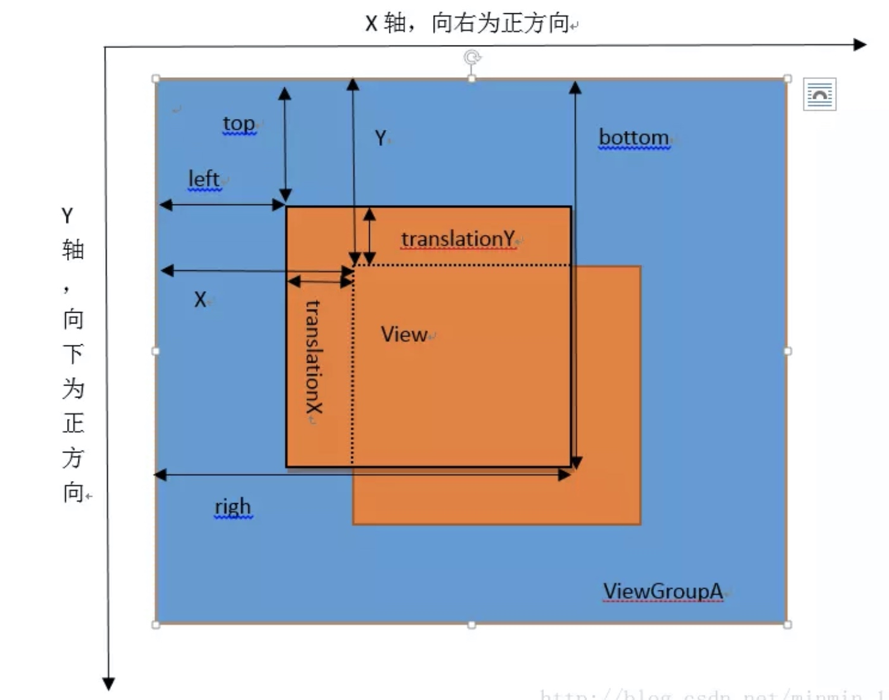
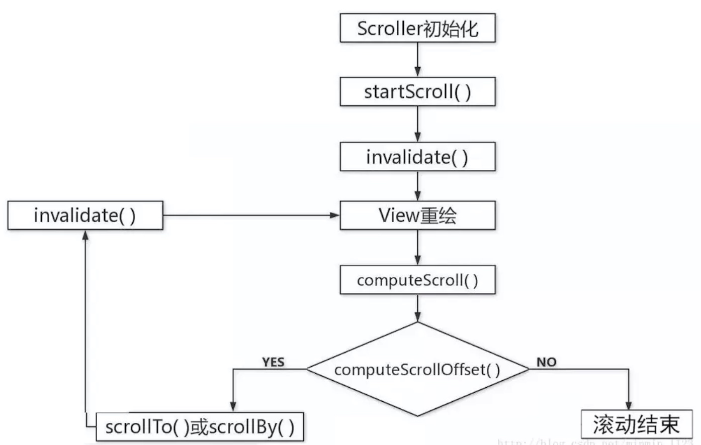

3.1 View基础知识
3.1.1 什么是View
- View是Android中所有控件的基类，是界面层的控件的一种抽象
- ViewGroup，继承View，内部包含了许多控件
- 通过View和ViewGroup构成View树的结构，类似于Web中的Dom树
3.1.2 View的位置参数

- 坐标：X轴和Y轴，正方向为右和下
- View的属性：
- x/y：View左上角的位置
- top/left/right/bottom：上下左右
- translationX/translationY：平移量
3.1.3 MotionEvent和TouchSlop
1.MotionEvent
手指接触屏幕后产生的事件。
| 属性 |
说明 |
| ACTION_DOWN |
按下 |
| ACTION_MOVE |
滑动 |
| ACTION_UP |
离开 |
| ACTION_CANCEL |
取消 |
| ACTION_OUTSIDE |
超出边界 |
| ACTION_POINTER_DOWN |
多点按下 |
| ACTION_POINTER_UP |
多点离开 |
ACTION_CANCEL：从当前控件转移到外层控件时会触发
获得点击事件发生时的X Y坐标：
- getX()/getY()：相对控件的位置
- getRawX()/getRawY()：相对整个屏幕的位置
2.TouchSlop
系统能识别的滑动最小距离，和设备相关。
获取方法：
ViewConfiguration.get(getContext()).getScaledTouchSlop()
3.1.4 VelocityTracker、GestureDetector和Scroller
1.VelocityTracker
速度追踪
使用：
首先在view的onTouchEvent方法中追踪当前单击事件的速度:
VelocityTracker velocityTracker = VelocityTracker.obtain();//实例化一个VelocityTracker 对象
velocityTracker.addMovement(event);//添加追踪事件
接着在ACTION_UP事件中获取当前的速度:
velocityTracker .computeCurrentVelocity(1000);//指定时间
float xVelocity = velocityTracker .getXVelocity();//水平方向
float yVelocity = velocityTracker .getYVelocity();//垂直方向
最后，当不需要使用它的时候，释放、回收：
/*清除释放*/
velocityTracker.clear();
velocityTracker.recycle()
速度 = (终点位置-起点位置)/时间
2.GestureDetector
手势检测，辅助检测用户单击、滑动、长按、双击等行为
使用：
创建一个GestureDetecor对象并实现OnGestureListener接口：
GestureDetector mGestureDetector = new GestureDetector(this);//实例化一个GestureDetector对象
mGestureDetector.setIsLongpressEnabled(false);// 解决长按屏幕后无法拖动的现象
然后，在待监听view的onTouchEvent方法中添加如下实现：
//目标view的onTouchEvent方法中修改返回值
boolean consume = mGestureDetector.onTouchEvent(event);
return consume;
建议：
监听滑动，使用onTouchEvent
监听双击，使用GestureDetector
3.Scroller
使用Scroller的实现滑动的步骤：
- 初始化一个Scroller对象
- 重写View.computeScroll()方法
- 调用startScroll()开始滑动，invalidate()重绘
Scroller scroller = new Scroller(mContext); //实例化一个Scroller对象
@Override
public void computeScroll() {
super.computeScroll();
if(mScroller.computeScrollOffset()){
((View) getParent()).scrollTo(mScroller.getCurrX(),mScroller.getCurrY());
//通过不断的重绘不断的调用computeScroll方法
invalidate();
}
}
public void smoothScrollTo(int destX,int destY){
int scrollX=getScrollX();
int delta=destX-scrollX;
//1000秒内滑向destX
mScroller.startScroll(scrollX,0,delta,0,2000);
invalidate();
}
3.2 View的滑动
3.2.1 使用scrollTo/scrollBy
- scrollTo：基于所传参数的绝对滑动
- scrollBy：基于当前位置的相对滑动，调用的也是scrollTo方法。
3.2.2 使用动画
1.视图动画：
//translate.xml
<?xml version="1.0" encoding="utf-8"?>
<set xmlns:android="http://schemas.android.com/apk/res/android">
<translate android:fromXDelta="0" android:toXDelta="300" android:duration="1000"/>
</set>
//Java代码
mCustomView.setAnimation(AnimationUtils.loadAnimation(this, R.anim.translate));
2.属性动画：
ObjectAnimator.ofFloat(mCustomView,"translationX",0,300).setDuration(1000).start();
3.2.3 改变布局参数
通过改变View的布局参数，实现View的滑动。
LinearLayout.LayoutParams layoutParams= (LinearLayout.LayoutParams) getLayoutParams();
layoutParams.leftMargin = getLeft() + offsetX;
layoutParams.topMargin = getTop() + offsetY;
setLayoutParams(layoutParams);
3.2.4 各种滑动方式的对比
针对上面的分析做一下总结,如下所示:
- scrollTo/scrollBy:操作简单,适合对 View 内容的滑动;
- 动画:操作简单,主要适用于没有交互的View 和实现复杂的动画效果;
- 改变布局参数:操作稍微复杂,适用于有交互的View。
3.3 弹性滑动
弹性滑动思想:将一次大的滑动分成若干次小的滑动
并在一个时间段內完成,弹性滑动的具体实现方式有很多,比如通过 Scroller、Handler#postDelayed以及Thread#sleep等。
3.3.1 使用Scroller
Scroller scroller = new Scroller(mContext); //实例化一个Scroller对象
@Override
public void computeScroll() {
super.computeScroll();
if(mScroller.computeScrollOffset()){
((View) getParent()).scrollTo(mScroller.getCurrX(),mScroller.getCurrY());
//通过不断的重绘不断的调用computeScroll方法
invalidate();
}
}
public void smoothScrollTo(int destX,int destY){
int scrollX=getScrollX();
int delta=destX-scrollX;
//1000秒内滑向destX
mScroller.startScroll(scrollX,0,delta,0,2000);
invalidate();
}
分析：
Scroller.invalidate方法导致View重绘，View.draw方法被执行，然后在重写的View.computeScroll方法中，会判断computeScrollOffset，true则调用scrollTo/scrollBy滚动、invalidate/postInvalidate再次重绘，如此反复，直到computeScrollOffset为false。

3.3.2 通过动画
动画本身就是一种渐近的过程,因此通过它来实现的滑动天然就具有弹性效果,比如以下代码可以让一个 View 的内容在 100ms 内向左移动 100 像素。
ObjectAnimator.ofFloat (targetView, “translationX”, 0, 100).setDuration
(100).start () ;
我们还可以利用动画的特性来实现一些动画不能实现的效果，例如：
final int startX = 0;
final int deltaX = 100;
ValueAnimator animator = ValueAnimator.ofInt (0, 1).setDuration (1000);
animator.addUpdateListener (new AnimatorUpdateListener () {
@Override
public void onAnimationUpdate (ValueAnimator animator) {
float fraction = animator.getAnimatedFraction ();
mButton1.scrollTo (startX + (int) (deltaX * fraction), 0);
}
});
animator.start ();
利用onAnimationUpdate,我们就可以在动画的每一帧到来时获取动画完成的比例,然后再根据这个比例计算出当前View 所要滑动的距离。
3.3.3 使用延时策略
3.4 View的事件分发机制
3.4.1 点击事件的传递规则
所谓点击事件的事件分发,其实就是对 MotionEvent事件的分发过程,即当一个MotionEvent 产生了以后,系统需要把这个事件传递给一个具体的View,而这个传递的过程就是分发过程。
事件分发的三个方法：
- dispatchTouchEvent
- 用来进行事件的分发。如果事件能够传递给当前 View,那么此方法一定会被调用,返回结果受当前View 的 onTouchEvent 和下级 View的dispatchTouchEvent 方法的影响,表示是否消耗当前事件。
- onInterceptTouchEvent
- 在 dispatchTouchEvent 方法中调用,用来判断是否拦截某个事件,如果当前 View 拦截了某个事件,那么在同一个事件序列当中,此方法不会被再次调用,返回结果表示是否拦截当前事件。
- onTouchEvent
- 在 dispatchTouchEvent 方法中调用,用来处理点击事件,返回结果表示是否消耗当前事件,如果不消耗,则在同一个事件序列中,当前 View 无法再次接收到事件。
//伪代码
public boolean dispatchTouchEvent(MotionEvent ev) {
boolean result = false;
if(onInterceptTouchEvent(ev)) { //是否拦截
result = onTouchEvent(ev); //拦截，处理事件
} else { //不拦截，分发事件
result = child.dispatchTouchEvent(ev);
}
return result;
}
点击事件和监听优先级：
onTouchListener > onTouchEvent > onClickListener
当一个点击事件产生后,它的传递过程遵循如下顺序: Activity-> Window-> View,即事件总是先传递给 Activity, Activity 再传递给 Window,最后后Window 再传递给顶级 View。顶级 View 接收到事件后,就会按照事件分发机制去分发事件。
考虑一种情况,如果一个View 的 onTouchEvent 返回false,那么它的父容器的 onTouchEvent 将会被调用,依此类推。如果所有的元素都不处理这个事件,那么这个事件将会最终传递给 Activity 处理,即Activity的onTouchEvent 方法会被调用。
3.4.2 事件分发的源码解析
1.Activity对点击事件的分发过程
Activity#dispatchTouchEvent
public boolean dispatchTouchEvent (MotionEvent ev) {
if (ev.getAction () == MotionEvent.ACTION DOWN) {
onUserInteraction ();
}
if (getWindow ().superDispatchTouchEvent (ev)) {
return true;
}
return onTouchEvent (ev) ;
}
Window#superDispatchTouchEvent
Window 类可以控制顶级 View 的外观和行为策略,它的唯一实现位于 android.policy.PhoneWindow 。
public abstract boolean superDispatchTouchEvent(MotionEvent event);
PhoneWindow#superDispatchTouchEvent
@Override
public boolean superDispatchTouchEvent(MotionEvent event) {
return mDecor.superDispatchTouchEvent(event);
}
DecorView#getDecorView
顶层View，是一个FrameLayout。
2.顶级View对点击事件的分发过程
- 如果顶级 ViewGroup 拦截事件即onInterceptTouchEvent 返回 true,则事件由 ViewGroup 处理,这时如果 ViewGroup 的mOnTouchListener 被设置,则 onTouch 会被调用,否则 onTouchEvent会被调用。也就是说,如果都提供的话,onTouch 会屏蔽掉 onTouchEvent。在onTouchEvent中,如果设置了mOnClickListener,则 onClick 会被调用。
- 如果顶级ViewGroup 不拦截事件,则事件会传递给它所在的点击事件链上的子 View,这时子 View 的 dispatchTouchEvent 会被调用。到此为止,事件已经从顶级 View 传递给了下一层 View,接下来的传递过程和顶级 View 是一致的,如此循环,完成整个事件的分发。
ViewGroup#dispatchTouchEvent
判断当前View是否拦截点击事件
// Check for interception.
final boolean intercepted;
if (actionMasked == MotionEvent.ACTION_DOWN
|| mFirstTouchTarget != null) {
final boolean disallowIntercept = (mGroupFlags & FLAG_DISALLOW_INTERCEPT) != 0;
if (!disallowIntercept) {
intercepted = onInterceptTouchEvent(ev);
ev.setAction(action); // restore action in case it was changed
} else {
intercepted = false;
}
} else {
// There are no touch targets and this action is not an initial down
// so this view group continues to intercept touches.
intercepted = true;
}
- 判断拦截：
- MotionEvent.ACTION_DOWN
- mFirstTouchTarget != null
- 判断mGroupFlags，可通过子View的requestDisallowInterceptTouchEvent()设置
ViewGroup遍历子所有View
- 判断子元素是否能接受这个点击事件。主要是通过两点：
- 子元素是否在播放动画
- 点击事件的着落点是否在子元素的区域内。
dispatchTransformedTouchEvent()
- 实际就是调用子元素的dispatchTouchEvent()方法。
- 返回值为true，那么mFirstTouchTarget将会赋值并且跳出循环
- 返回值为false，将事件分发给下一个子View。
final View[] children = mChildren;
for (int i = childrenCount - 1; i >= 0; i--){
...
//2. 通过dispatchTransformedTouchEvent()将事件传递给子View
if (dispatchTransformedTouchEvent(ev, false, child, idBitsToAssign)) {
// Child wants to receive touch within its bounds.
mLastTouchDownTime = ev.getDownTime();
if (preorderedList != null) {
// childIndex points into presorted list, find original index
for (int j = 0; j < childrenCount; j++) {
if (children[childIndex] == mChildren[j]) {
mLastTouchDownIndex = j;
break;
}
}
} else {
mLastTouchDownIndex = childIndex;
}
mLastTouchDownX = ev.getX();
mLastTouchDownY = ev.getY();
//3.对mFirstTouchTarget赋值
newTouchTarget = addTouchTarget(child, idBitsToAssign);
alreadyDispatchedToNewTouchTarget = true;
break;
}
ev.setTargetAccessibilityFocus(false);
}
private boolean dispatchTransformedTouchEvent(MotionEvent event, boolean cancel,
View child, int desiredPointerIdBits) {
final boolean handled;
if (child == null) {
handled = super.dispatchTouchEvent(transformedEvent);
} else {
handled = child.dispatchTouchEvent(transformedEvent);
}
return handled;
}
private TouchTarget addTouchTarget(@NonNull View child, int pointerIdBits) {
final TouchTarget target = TouchTarget.obtain(child, pointerIdBits);
target.next = mFirstTouchTarget;
//mFirstTouchTarget为链表结构
mFirstTouchTarget = target;
return target;
}
mFirstTouchTarget是否赋值，将会影响ViewGroup的拦截策略。如果mFirstTouchTarget为null，那么ViewGroup将会拦截下来同一序列的所有事件，自己处理并不再向子元素传递。那mFirstTouchTarget在什么情况下才为null呢？一般在两种情况下，
- 要么是ViewGroup遍历了所有的子元素事件没有被处理；
- 要么是子元素处理了ACTION_DOWN但是dispatchTouchEvent返回为false。
if (mFirstTouchTarget == null) {
// 此处的第三个参数为null，代表事件交给ViewGroup自己处理
handled = dispatchTransformedTouchEvent(ev, canceled, null,
TouchTarget.ALL_POINTER_IDS);
}
3.View对点击事件的处理过程
- 是否设置了onTouchListener()
- 是：调用onTouch()
- 否：调用onTouchEvent()
onTouch()的优先级要高于onTouchEvent()。
public boolean dispatchTouchEvent(MotionEvent event) {
//...
//首先判断是否设置了onTouchListener()
ListenerInfo li = mListenerInfo;
if (li != null && li.mOnTouchListener != null
&& (mViewFlags & ENABLED_MASK) == ENABLED
&& li.mOnTouchListener.onTouch(this, event)) {
result = true;
}
//调用onTouchEvent(event)
if (!result && onTouchEvent(event)) {
result = true;
}
//...
return result;
}
View的点击事件是在ACTION_UP事件中调用了performClick()方法处理,长按事件是在ACTION_DOWN事件中调用了checkForLongClick()方法处理。
public boolean onTouchEvent(MotionEvent event) {
...
//如果View设有代理，将会执行TouchDelegate.onTouchEvent(event)
if (mTouchDelegate != null) {
if (mTouchDelegate.onTouchEvent(event)) {
return true;
}
}
//只要View的CLICKABLE和LONG_CLICKABLE有一个返回true，他就会被消耗这个事件。
if (clickable || (viewFlags & TOOLTIP) == TOOLTIP) {
switch (action) {
case MotionEvent.ACTION_UP:
...
if (!focusTaken) {
if (mPerformClick == null) {
mPerformClick = new PerformClick();
}
//点击事件
if (!post(mPerformClick)) {
performClick();
}
}
...
mIgnoreNextUpEvent = false;
break;
case MotionEvent.ACTION_DOWN:
...
//长按事件
if (!clickable) {
checkForLongClick(0, x, y);
break;
}
...
break;
...
}
return true;
}
return false;
}
3.5 View的滑动冲突
3.5.1 常见的滑动冲突场景
- 外部滑动方向和内部滑动方向不一致；
- 外部滑动方向和内部滑动方向一致；
- 上面两种情况的嵌套。
3.5.2 滑动冲突的处理规则
- 场景1，当用户左右滑动时，让外部的View拦截点击事件；当用户上下滑动时，让内部View拦截点击事件。
- 场景2，根据业务不同进行判断，让外部或内部View拦截处理。
- 场景3，相对复杂，根据业务进行处理。
如何判断是左右滑动还是上下滑动？
根据水平或垂直方向的距离差、夹角或速度差进行判断。
3.5.3 滑动冲突的解决方式
1）外部拦截法
父容器如果需要此事件就拦截，重写父容器的onInterceptTouchEvent方法。
public boolean onInterceptTouchEvent(MotionEvent event) {
boolean intercepted = false;
int x = (int) event.getX();
int y = (int) event.getY();
switch (event.getAction()) {
case MotionEvent.ACTION_DOWN: {
intercepted = false; //!!!
break;
}
case MotionEvent.ACTION_MOVE: {
if (满足父容器的拦截要求) {
intercepted = true;
} else {
intercepted = false;
}
break;
}
case MotionEvent.ACTION_UP: {
intercepted = false;
break;
}
default:
break;
}
mLastXIntercept = x;
mLastYIntercept = y;
return intercepted;
}
2）内部拦截法
父容器不拦截任何事件，所有事件传递给子元素，如果子元素需要就直接消耗，否则就交给父容器处理。父容器需要的话，调用parent.requestDisallowInterceptTouchEvent方法。
public boolean dispatchTouchEvent(MotionEvent event) {
int x = (int) event.getX();
int y = (int) event.getY();
switch (event.getAction()) {
case MotionEvent.ACTION_DOWN: {
parent.requestDisallowInterceptTouchEvent(true);
break;
}
case MotionEvent.ACTION_MOVE: {
int deltaX = x - mLastX;
int deltaY = y - mLastY;
if (父容器需要此类点击事件) {
parent.requestDisallowInterceptTouchEvent(false);
}
break;
}
case MotionEvent.ACTION_UP: {
break;
}
default:
break;
}
mLastX = x;
mLastY = y;
return super.dispatchTouchEvent(event);
}
重写父容器的onInterceptTouchEvent方法。
public boolean onInterceptTouchEvent(MotionEvent event) {
int action = event.getAction();
if (action == MotionEvent.ACTION_DOWN) {
return false;
} else {
return true;
}
}